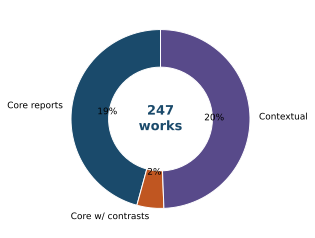
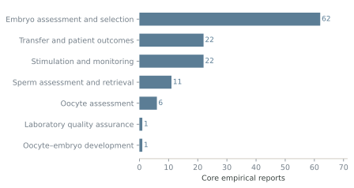
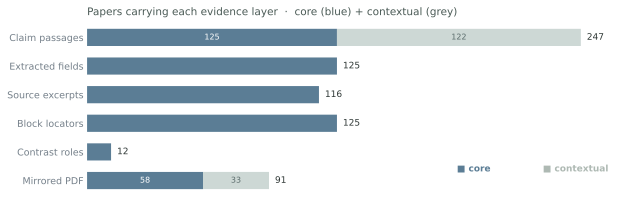
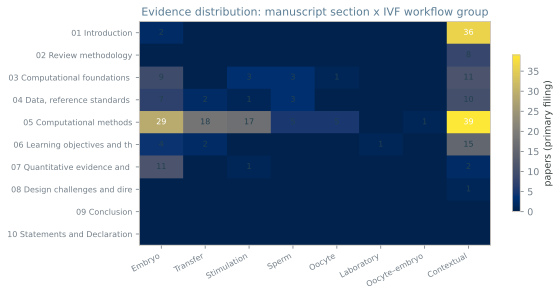
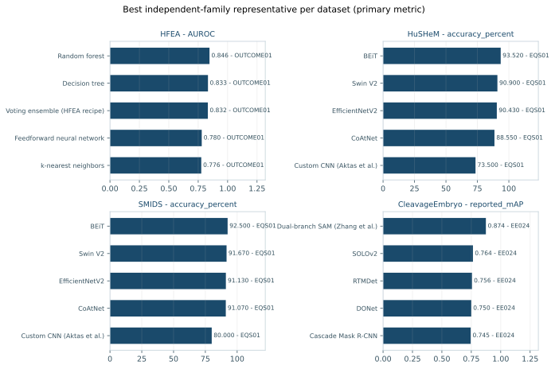
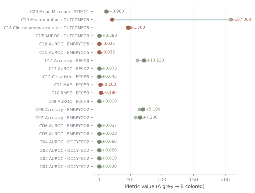

For reviewers. This site organizes the 247 works cited in the AIR manuscript by the section they support. Each paper has an evidence card showing (a) the manuscript passages it supports — highlighted; (b) extracted evidence fields; (c) source-linked excerpts with archived block locators; (d) where mirrored, a local PDF. Use Catalog to filter; Claims to read forward from a manuscript sentence; Contrasts for the 20 conditional comparisons; Atlas for figures.
247cited works
125core reports
122contextual
10manuscript sections
447highlighted claim passages
576source-linked excerpts
20conditional contrasts
91PDFs mirrored
Corpus at a glance


Papers by manuscript section
- §1 Introduction 38
- §2 Review methodology 8
- §3 Computational foundations of the IVF workflow 27
- §4 Data, reference standards and the structure of evidence 23
- §5 Computational methods 114
- §6 Learning objectives and the interpretation of model outputs 22
- §7 Quantitative evidence and supported decision claims 14
- §8 Design challenges and directions for validated AI 1
How to read this site
| Visual cue | Meaning |
|---|---|
| yellow highlight | Verbatim manuscript passage citing the work — the claim it supports |
| orange highlight | Machine-extracted evidence field (task, inputs, method, split, validation…) |
| EMBRYO01-B0034 | Block locator into the archived full-text reader (sha256-pinned) |
| core / contextual | Evidence layer of the cited work |
| C-id | Paper contributes a conditional comparison (Contrasts page) |
| pending | Machine-derived; human verification pending |
Reading path: 1. Catalog filter → 2. paper card → 3. Claims → 4. Contrasts/Atlas.
Evidence highlights



Four-dataset benchmark: best independent-family representative per dataset.

Conditional contrasts: within-report A→B configuration deltas.
Honesty note. All extracted content is machine-derived and author verification is pending. Highlighted passages are manuscript text citing each work; source excerpts are paraphrases keyed to archived block locators (sha256-pinned). PDFs are mirrored only where locally held or openly licensed; otherwise the DOI link is provided.